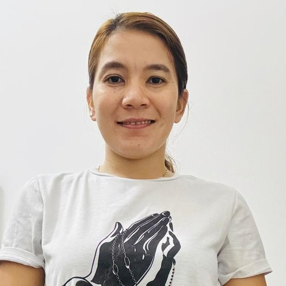
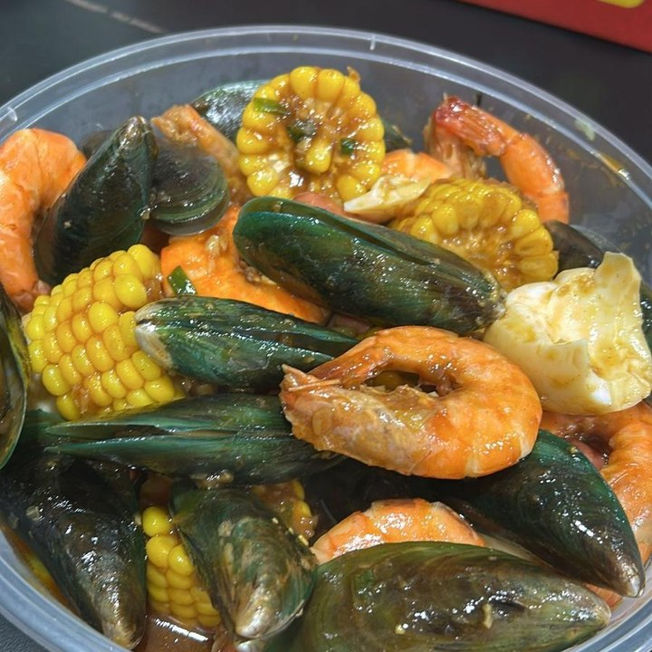
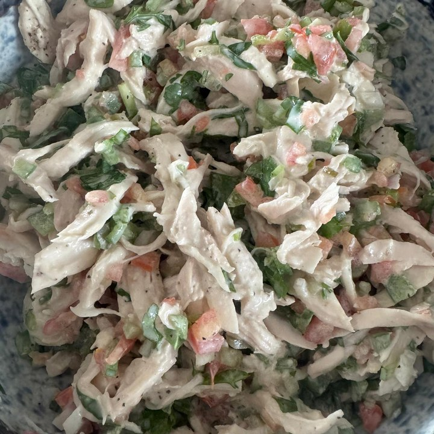
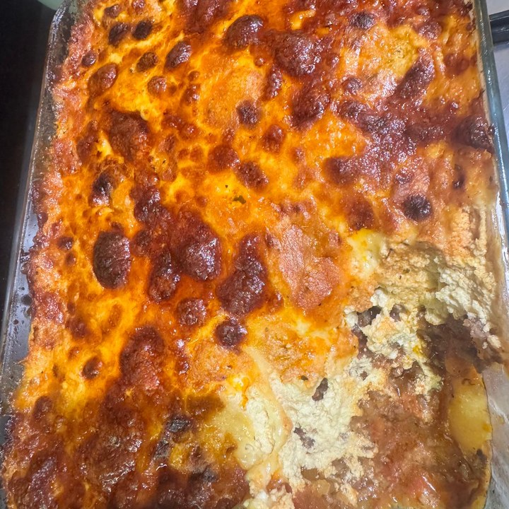
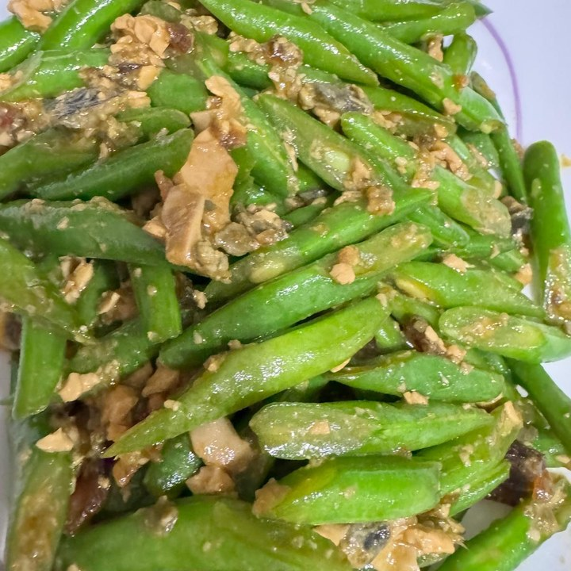

Filipino · 34 · Children, cooking & household
Six and a half years with one family, who have recommended her in writing — they left their home, their children and the household money in her hands when they travelled, and in all those years nothing was ever mislaid.
“Vilma has earned our complete trust. When our family travels, we confidently entrust our home, our children, and daily household responsibilities to her care.”
— Jaynel Lim, her previous employer, 2020–2026
Trust signals
Our strongest trust signal — a family of six and a half years, recommending her in writing. The letter is from that previous household, not from the family she is working for now, whom we have not approached.
At a glance
The essentials
Available from
Mid to end November 2026 — she needs to transfer by then. Transfer within Singapore.
Six and a half years, one family
February 2020 to August 2026 — a private flat, the cooking, the household and their children. One unbroken registration, and the household that wrote her letter.
Trusted with the money
Household spending, the groceries and the errands — that employer names the cash and the credit cards, and six and a half years with nothing ever mislaid.
Children
She ran the school runs and the activities for that family on her own, which that employer puts in writing. Three young girls in the household she is in now.
Where she is now
Since August 2026 — a two-storey penthouse with three young girls and their parents: the cooking, the cleaning, the laundry and ironing, the groceries, and two dogs.
Dogs
Two of them in her current household, hers to look after. A family with a dog is no obstacle at all.
Cooking
Her previous employer calls her a capable cook who follows a new recipe well — which is the useful thing, because it means a family’s own dishes can be taught. Photographs below.
What she is looking for
A household where she is the only helper, and where she can run the house and the kitchen the way she did for six and a half years.
From Jaynel Lim’s signed letter, written at the end of six and a half years. The household she is in now has not been approached.
“It is our pleasure to recommend Vilma, who has been a valued part of our family as our domestic helper… she has consistently shown herself to be responsible, caring, exceptionally reliable, and honest.”
“Vilma has earned our complete trust. When our family travels, we confidently entrust our home, our children, and daily household responsibilities to her care. In seven years, we have never had an instance of misplaced or missing belongings. She handles household spending, grocery shopping, and errands, including the use of our cash and credit cards, with honesty, transparency, and care.”
“As a caregiver, Vilma is warm and attentive. She independently manages our children’s school runs and activities and provides dependable support in their daily routines.”
On her cooking and her initiative: “a capable cook who follows new recipes well, manages daily housework, and takes care of routine grocery shopping. Her ability to follow instructions would be helpful in learning your family’s preferences, dietary requirements, and household customs. She is hardworking and takes initiative: during our house move, she independently organised and completed the packing efficiently.”
“Above all, Vilma is kind, warm-hearted, and genuinely pleasant to have in our home.” Jaynel is clear about why she left: “We have released Vilma solely because our household circumstances have changed and we no longer require a domestic helper.” She closes: “We sincerely hope you will treasure her contribution to your home… She has meant a great deal to our family, and we hope she will feel equally valued and cared for in yours.”
Two Singapore households since February 2020.
February 2020 to August 2026 — six years and six months. A private flat: the cooking, the general household and the family’s children, carried on her employment record as one unbroken registration. That employer counts it as seven years, and either way it is most of her working life in Singapore spent in one home. That household released her when they no longer needed a helper, and wrote her letter two months later.
August 2026 to now. A two-storey penthouse with three young girls and their parents — the cooking, the cleaning, the laundry and ironing, the groceries, two dogs, and time with the youngest. Her record carries it as cooking, general household and the care of a toddler.
Where she’d suit next. A family who want one pair of hands on the house, the kitchen and the children — she has done the school runs, the activities and the marketing on her own, and she follows a new recipe well, so a family’s own dishes can be taught. She is looking for a household where she is the only helper, and she is comfortable with dogs.
Jaynel Lim’s signed letter, her details for a reference call, and Vilma’s full employment history are available to interested families, with Vilma’s consent.
Photographs Vilma took of her own cooking — Filipino home food alongside the Western dishes she has learned from her families’ recipes.




Tell us a little about your household and we’ll be in touch within 1–2 business days. We’ll only move forward if it feels like a genuine fit.